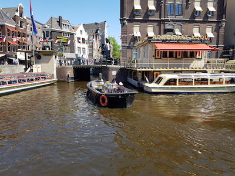

Activities
Canal parade
When the clock hits the first of August, Amsterdam is being covered in the famous Pride flag. The city will be decorated in all sorts of colors and the canals are set free for the boats. You can also go on the boats, but if you just want to look at it, you can see all of this happening from the canals sidewalks.
On the boat: € 12,50
Date: 1 August
from 13:00 - 17:00
The route of the boats: It begins at the Oosterdok (near the library and the Conversatorium of Amsterdam), de Nieuwe herengracht, Amstel, Prinsengracht and Westerdok.